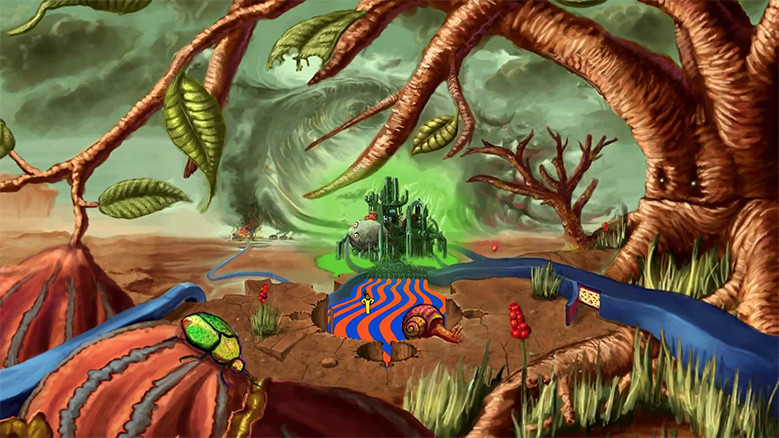

digital

ZOOMQUILT2
https://www.youtube.com/watch?v=INqKqk-ifpc-どんな人
今回はflashの作品を紹介します。作者不詳です。 様々なイラストレーターが参加してつくられた作品のようです。
-解説
88枚の画像を特殊な加工をしつなげ、 絵の中に無限に入り込んでいけるようなアニメーションを表現しています。
-好きなところ
中学のときニコニコ動画にBGMつきで キャプチャ動画があがっていて、好きでよく見てました。 最近調べてみて初めてflash使っていたことを知りました。 単純に絵がどんどんズームしていって場面が変わっていくのは 見ていて面白いです。なんかこういう感じのwebコンテンツが あってもいいんじゃないかなと思いましたが、ありました。 弊社新卒採用サイト↓ https://www.i-studio.co.jp/recruit2018/